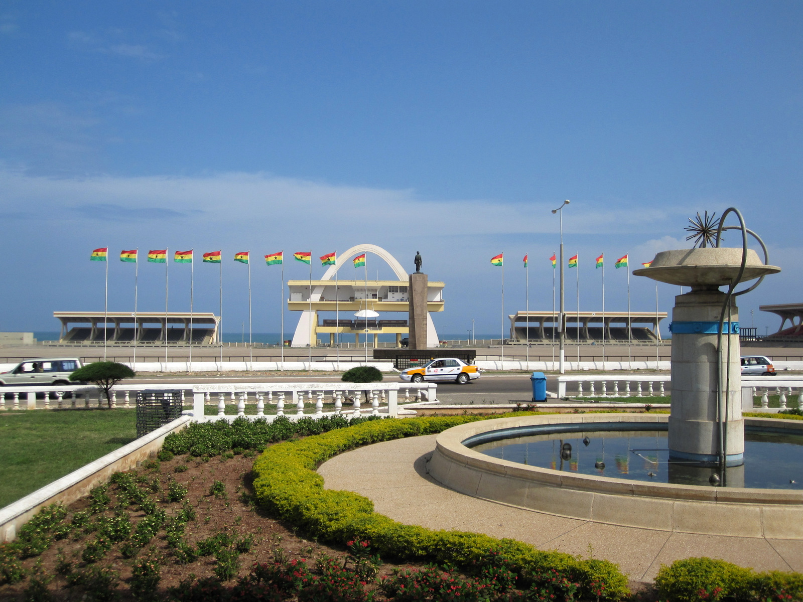

About Ghana
Formerly Gold Coast, Ghana became independent from Britain on March 6, 1957, and was the first black African colony to achieve independence. The European power struggles in Ghana between the 15th and 19th centuries started with the Portuguese who built Elmina Castle in 1482 followed by the Dutch, Swedes, Danes, Prussians and the British looking for fortunes in gold and ivory. This intense commercial rivalry ended with the growth of the tragic trade in slaves - all 42 European castles and fortifications being used as dungeons for the millions who lost their lives or whose descendants compose the African diaspora today. Cape Coast Castle, one of the best preserved, is an official museum of the Slave Trade. he capital in Ghana is Accra and is located on the Greenwich Meridian, with a population of about 3 million. Weatherwise Northern Ghana has a rainy season from about April to October. The rest of the year it is hot and dry with temperatures up to 38 C. In southern Ghana the rains last from April to June and again from September to October. Generally temperatures are between 21 C and 32 C. click here for more
Facts about Ghana

1. It was The First Sub-Saharan Country To Gain Independence
The country gained independence in 1957, but it went through many coups that devastated it for at least three decades. It started witnessing some stability in 1981 when Lt. Jerry Rawlings came into power. Ever since then, the country has seen a peaceful time.Ghanaian veterans were killed by the colonial police on a protest march. Riots broke out in Accra and though Nkrumah and other Ghanaian leaders were temporarily imprisoned, the event became a catalyst for the independence movement. After being released from prison, Nkrumah founded the Convention People's Party (CPP), which launched a wide-scale campaign in support of independence with the slogan "Self Government Now!"[37] Heightened nationalism within the country grew their power and the political party widely expanded. In February 1951, the CPP gained political power by winning 34 of 38 elected seats, including one for Nkrumah who was imprisoned at the time. The British government revised the Gold Coast Constitution to give Ghanaians a majority in the legislature in 1951. In 1956, Ghana requested independence inside the Commonwealth, which was granted peacefully in 1957 with Nkrumah as prime minister and Queen Elizabeth II as sovereign.[38] More info
2. It Is The 7th Largest Gold Producer in the world
One of the exciting facts about Ghana is its gold production capabilities. The country is the 7th largest producer of gold worldwide. Ghana produces tonnes of gold each year, as it is also the second largest producer of this precious metal in Africa. So, if you need quality gold, you know where to go.Ghana is Africa's largest gold producer, 6th largest worldwide and more ounces per km than Nevada1 Ghana produced ~5 million ounces of gold in 2020, surpassing South Africa's 2020 production of ~3.5 million ounces1. Ghana produces more gold per square kilometer than Nevada and holds more estimated reserves than key gold-producing countries like Peru and Papua New Guinea. Southern Ghana has been considered one of the world’s most prolific regions for gold discoveries for some time, with both gold producers (including Gold Fields and AngloGold Ashanti) and explorers enjoying success there including Shandong Gold’s takeover offer for Cardinal Resources in 2020.This unregulated small-scale and artisanal gold mining is known locally as galamsey, a slang word derived from the Ghanaian words “gather” and “sell.” About one million Ghanaians engage in the practice, supporting about 4.5 million people in the country. Many of the galamseyers live in poverty, and their activities often come at a cost to both human health and the environment. Although individual galamsey sites cover less area than an industrial mine, their cumulative effect on the landscape outweighs those of larger mines. In the southwestern forests of Ghana, for instance, the footprint of small-scale mines is nearly seven times greater than that of industrial mines. The mercury and heavy metals used in galamsey can contaminate drinking water for entire communities. It also causes major health issues, such as kidney problems and neurological disorders, to those continually exposed to the metals. More info
3. There Are Two Distinct Rainy Seasons
The rainy season in Ghana is split into two unique parts. The first season is a wet one, and then it is followed by dry weather for two months. Finally, the country receives a second rainy season that lasts for at least a month.Ghana’s climate is tropical and strongly influenced by the West Africa monsoon winds. The climate is generally warm with variable temperatures masked by seasons and elevation. The northern part of the country typically records one rainy season, which begins in May and lasts until September. Southern Ghana records two rainy seasons; major season from April to July and minor from September to November. There are two seasons in Ghana, the dry season and the wet season. The rainy season experiences the rainfall in two periods, appearing between March to July and September to October. Heaviest rainfall mostly occurs in June. Northern Ghana has a wet season lasting from June to October. During this season plenty of food is available along with the fresh grass for grazing for animals. The dry season in Ghana is when there is little or no rainfall. The southern part of Ghana experiences the dry season from November to February. This period is much longer in the Northern part of Ghana where it occurs between November and June. The northeast trade winds are dry in the Northern part during the season and are also known as Harmattan. More info